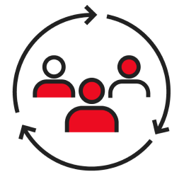

State Farm® has a long-standing history of engaging with a broad range of suppliers to foster innovation and creativity, increase competition to keep costs low for our policyholders, and enhance our community ties and overall business performance. We value suppliers who:
In support of our inclusive procurement and contracting strategies, we provide opportunities and access for all suppliers, including diverse-owned businesses, to compete in fulfilling our business needs. Diverse-owned businesses are certified to be at least 51% owned, operated, and controlled by minorities, women, veterans, people with disabilities, and/or members of the LGBTQ+ community. State Farm will accept certifications from States, National Organizations or most third parties, such as Chambers of Commerce.
If your organization has not previously registered as a supplier with State Farm Insurance, or if you would like to be considered for future sourcing opportunities, please email supplierengagement@statefarm.com to request a registration form. You will receive the Supplier Registration form to complete and return to the Corporate Purchasing Department.